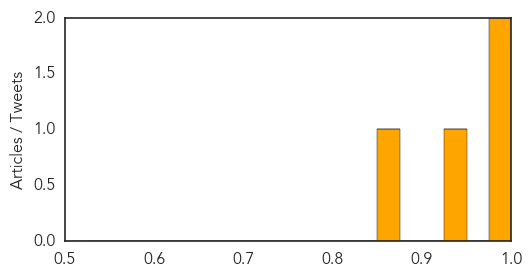
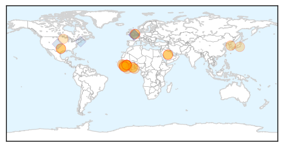
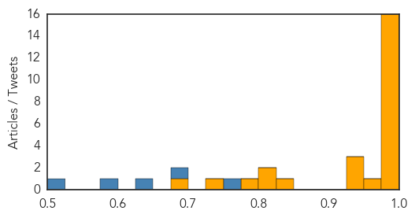

Dengue Fever
30-Day Web Trend
1 alerts, 1 warnings

30-Day Twitter Trend
0 alerts, 0 warnings

Article Locations

Article Confidences
Top Articles:
Top Tweets:
- 0.602
- “@HUMNEWS: “@RonanKelly13: Dengue in Americas: 1.2 million suspected cases, 459 confirmed fatalities to Week 21 https://t.co/0SatI7bNak””
Ebola
30-Day Web Trend
0 alerts, 0 warnings

30-Day Twitter Trend
0 alerts, 0 warnings

Article Locations
Article Confidences
Top Articles:
- 1.000
- MERS virus spreads: Why it’s so difficult to fight
- 1.000
- MERS death toll climbs to 14, WHO anticipating more cases while outbreak loses steam
- 0.999
- Ebola could hit again and we would hardly do better -MSF
- 0.999
- Ebola's grip strengthens in Sierra Leone, Guinea
- 0.997
- Sierra Leone announces new curfew to halt Ebola
- 0.997
- Ebola could hit again and we would hardly do better - MSF
- 0.996
- Fighting MERS, again
- 0.996
- Ebola could hit again and we would hardly do better: MSF
- 0.996
- Ebola is on the rise again — and the world is no better prepared for it than last year
- 0.996
- Sierra Leone leader imposes curfew in bid to halt Ebola
- 0.992
- Guinea: IOM and CDC conduct Ebola Virus Disease outbreak assessment in Boke, Guinea
- 0.991
- Ebola Fears: Employer Best Practices for Epidemic Preparedness
- 0.991
- Sierra Leone enforces curfew as Ebola virus resurfaces in north west
- 0.990
- The Portland Press Herald / Maine Sunday Telegram
- 0.990
- Ebola nurse Will Pooley gets MBE
- 0.987
- Ebola Might Hit Again, We Remain Unprepared, Repeating Mistakes
- 0.972
- May Be, Ghanaians Are Ready For Mass Immunization Of An Ebola Vaccine That Was Never Tried On Humans
- 0.944
- Suffolk Ebola survivor Will Pooley awarded an MBE
- 0.940
- Monkeying Around With An Ebola Vaccine
- 0.939
- Indy native who beat Ebola wins prestigious award
- 0.850
- Sierra Leone: Sierra Leone announces new curfew to halt Ebola
- 0.819
- Monkeying Around With An Ebola Vaccine – Daily Guide Ghana
- 0.804
- South Korea MERS Crisis Witnesses Another Death but WHO Issues Positive Statements
- 0.800
- S/Leone: AU summit to consider report on Ebola crisis-Official
- 0.740
- UMN hospital to be regional treatment center for Ebola
- 0.687
- Ghanaians to Beware of the Governmental “Ebola Vaccine Trials”
Top Tweets:
- 0.804
- Milford settled suit over Ebola fear for $30000, document shows - New Haven Register http://t.co/F92vlybKjL ebola EVD
- 0.772
- MGH selected as regional Ebola treatment center - Boston Globe http://t.co/2s9ZgkU8EV ebola EVD
- 0.760
- 11 clinical staff from Sierra Leone work alongside international staff to run Ebola treatment trial. Invaluable support. Capacity building.
- 0.741
- State receives grant for regional Ebola treatment center - KOMO News http://t.co/uhUyib6cQg ebola EVD
- 0.720
- Mass. General is designated center for treating Ebola - Boston Globe http://t.co/Ztj13g59gN ebola EVD
- 0.687
- To date, 61 brave & hard working doctors, nurses, pharmacists & coordinators from 14 countries have worked on our Ebola treatment trials.
- 0.649
- University of Minnesota will be regional Ebola center - Chicago Tribune http://t.co/5q7lr1zZPx ebola EVD
- 0.644
- Are we beginning to witness low-level, ongoing cases of Ebola, such as may have been occurring for at least decades, if not longer?
- 0.590
- Good point, @josh_greenberg. @WHO always has a difficult balance to strike. 2009 pandemic deemed overreaction. Ebola deemed under-reaction.
- 0.578
- City Paid $30K to Settle Ebola Fears Lawsuit Over Girl, 7 - ABC News http://t.co/SGhKmKITOX ebola EVD
- 0.554
- Progrès 2015: où en sommes-nous dans la lutte contre l’Ebola? https://t.co/6IgySHL19r http://t.co/6PkV7kpUtV